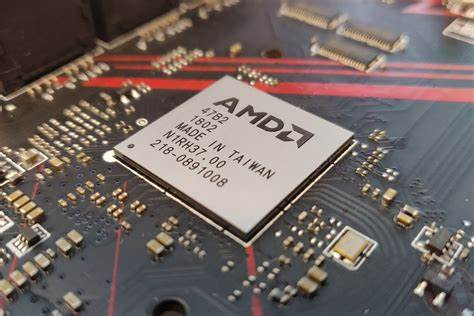
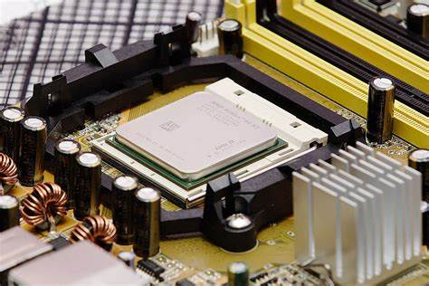
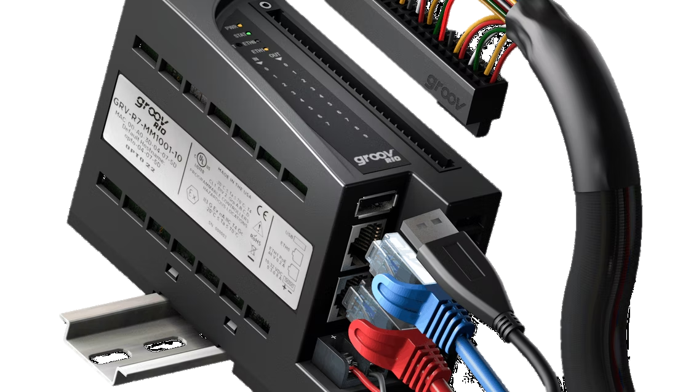
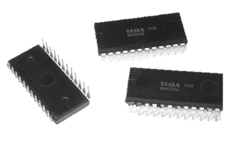
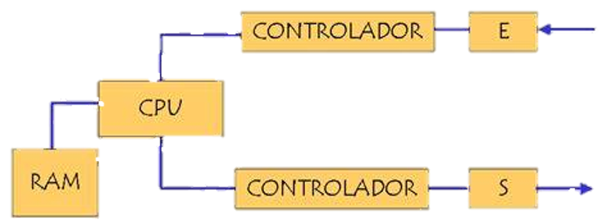
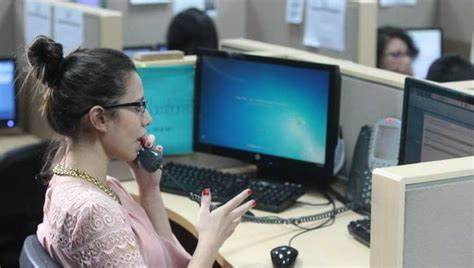
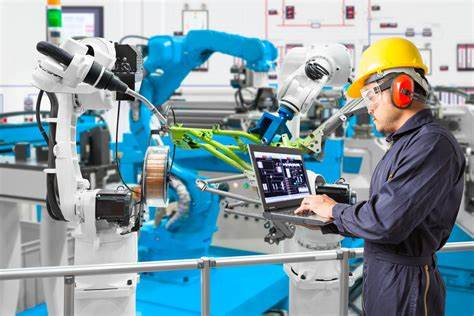

3.1 chipset
Un chipset electrónico gestiona el flujo de datos entre los componentes de una tarjeta madre. Es el controlador de tráfico entre CPU, Tarjeta Gráfica, RAM, almacenamiento y periféricos. Los expertos se han referido a él como el "pegamento" de la tarjeta madre.
3.1.1 Unidad centra de procesamiento
Los CPU proporcionan la característica fundamental de la computadora digital y son uno de los componentes necesarios encontrados en las computadoras de cualquier tiempo, junto con el almacenamiento primario y los dispositivos de entrada/salida . En 1971 nació el primer microprocesador.
3.1.3 Módulos de entrada y salida
Así, decimos que es una transferencia de entrada cuando el periférico es el emisor de la información y tiene como receptor el computador (procesador o memoria) y decimos que es una transferencia de salida cuando el computador es el emisor de la información y tiene como receptor el periférico.
3.1.4 Controlador de interrupciones
En computación, un controlador programable de interrupciones o PIC (Programmable Interrupt Controller) es un dispositivo usado para combinar varias fuentes de interrupciones sobre una o más líneas del CPU, mientras que permite que los niveles de prioridad sean asignados a sus salidas de interrupción (no confundir con el microcontrolador PICmicro de Microchip Technology). Cuando el dispositivo tiene múltiples salidas de interrupción a imponer, las impondrá en orden de su prioridad relativa. Los modos comunes de un PIC incluyen prioridades duras, prioridades rotativas, y prioridades en cascada. [cita requerida] Los PICs a menudo permiten la conexión en cascada de sus salidas a las entradas entre uno y otro.
3.1.5 Controlador de acceso directo a memoria
El DMA (acceso directo a la memoria) permite que el dispositivo de red mueva los datos del paquete directamente a la memoria del sistema, reduciendo la utilización de la CPU. Sin embargo, la frecuencia y los intervalos aleatorios en los cuales los paquetes llegan no permiten que el sistema ingrese un estado de energía más bajo. El coalescentes DMA permite que el NIC recoja los paquetes antes de que inicie un evento DMA. Esto puede aumentar la latencia de la red, pero también aumenta las probabilidades de que el sistema consuma menos energía. Los adaptadores y dispositivos de red basados en el controlador Ethernet Intel® I350 (y controladores posteriores) Asistencia la fusión de DMA.
3.1.7 Circuitos de control
Circuito de mando o maniobra. Es el encargado de controlar el funcionamiento del contactor. Normalmente consta de elementos de mando (pulsadores, interruptores,etc. identificados la primera letra con una S, elementos de protección, bobinas de contactores,temporizadores, y contactos auxiliares.
3.1.8 Controladores de video
El controlador de la tarjeta de video (también denominada unidad de procesamiento de gráficos [GPU]) es un software que permite que el sistema operativo y la aplicación de software utilicen el hardware de gráficos de la computadora.
3.2 Aplicaciónes
3.2.1 Entrada y salida
En informática, se conoce como dispositivos de entrada/salida (o periféricos bidireccionales) a aquellos aparatos electrónicos que permiten tanto introducir como extraer información de un sistema. Por ejemplo: un monitor táctil o una impresora multifunción.
3.2.2 Almacenamiento
Mientras la memoria se refiere a la ubicación de los datos a corto plazo, el almacenamiento es el componente de su computadora que le permite almacenar y acceder a datos a largo plazo. Usualmente, el almacenamiento se da en forma de una unidad de estado sólido o un disco duro.
3.3 Ambientes de servicio
3.3.1 Negocios
Definitivamente, la tecnología en general ha sido la causa principal y la acción más directa para la transformación del trabajo de las organizaciones en la posguerra del siglo XX. Tanto los bienes de capital «duros» (computadores, teléfonos, videos, facsímiles, grabadoras, etc.), como los programas y sistemas de información y comunicación en general, han incrementado enormemente la productividad y eficiencia de las organizaciones. Tenemos como ejemplos los siguientes: bases de datos en redes de todo orden y topología, sistemas de reservaciones en aerolíneas, sistemas de contabilidad y nóminas, archivos clínicos en centros de salud, sistemas de conmutación electrónica y un sin número de otras aplicaciones a procesos administrativos.
3.3.2 Industria
La industrialización de los servicios de tecnología de información va a redefinir el mercado en términos de como las organizaciones evalúan, compran y seleccionan los servicios y como los vendedores desarrollan y establecen precios de los servicios. Para lograr esta estandarización, se requiere un enfoque hacia las soluciones genéricas y esto debe ser responsabilidad de los proveedores, que deben de desarrollar, operar y administrar el resultado de estos genéricos de TI. Aunque los servicios de TI están en proceso de madurez, la madurez de la industria se ha incrementado en aspectos evidentes, como la forma en que los servicios son implementados y administrados.
3.3.3 Comercio electronico
El desarrollo de estas tecnologías y de las telecomunicaciones ha hecho que los intercambios de datos crezcan a niveles extraordinarios, simplificándose cada vez más y creando nuevas formas de comercio, y en este marco se desarrolla el Comercio Electrónico. Se considera “Comercio Electrónico” al conjunto de aquellas transacciones comerciales y financieras realizadas a través del procesamiento y la transmisión de información, incluyendo texto, sonido e imagen.